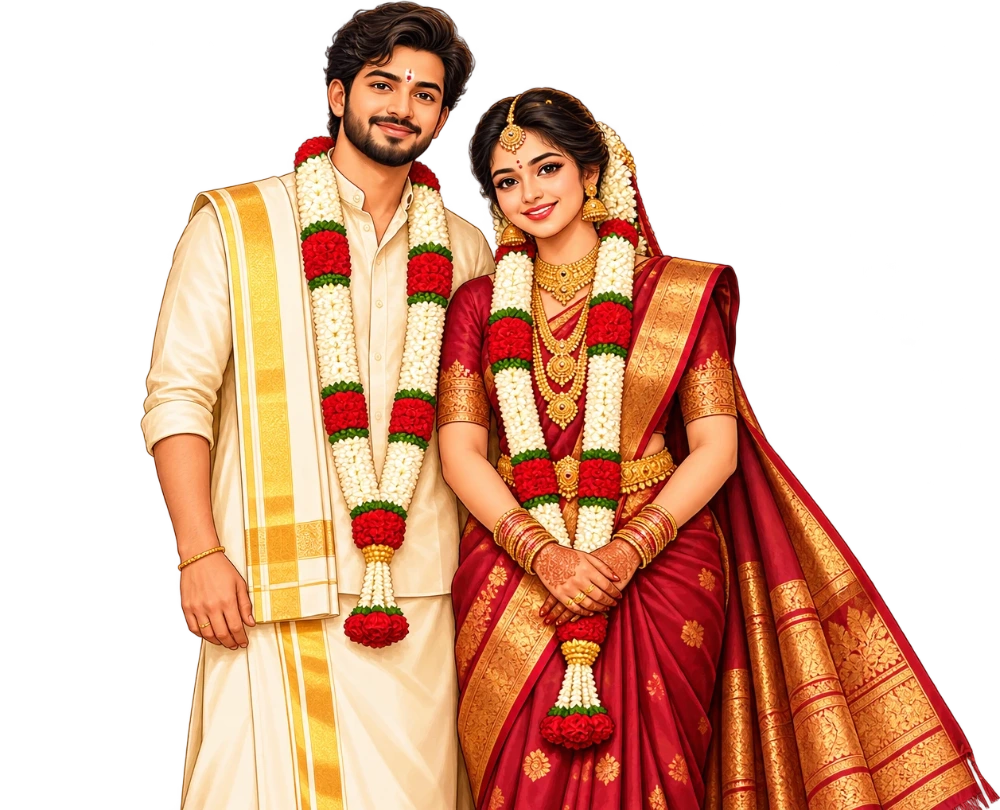

Sri Murugan Thunai
ஸ்ரீ முருகன் துணை
Together begins a beautiful chapter
இரு உள்ளங்கள் ஒன்றிணையும் நன்னாள்
Prabasankar♥Meenakshi
பிரபாசங்கர்♥மீனாட்சி
Sunday · 22 November 2026
ஞாயிற்றுக்கிழமை · 22.11.2026
8.30 a.m. – 10.00 a.m. · Vaitheeswaran Koil
காலை 8.30 – 10.00 · வைத்தீஸ்வரன் கோயில்
Thirukkural · 45
திருக்குறள் · 45 · இல்வாழ்க்கை
If a home is made of love and virtue,
that is its nature, and that its reward.
அன்பும் அறனும் உடைத்தாயின் இல்வாழ்க்கை
பண்பும் பயனும் அது.
— Thiruvalluvar
— திருவள்ளுவர்
The Couple
மணமக்கள்

The Groom
மணமகன்
V. Prabasankar
V. பிரபாசங்கர்
M.B.A.
Founder — Simpro Software Solutions Pvt. Ltd.
நிறுவனர் — Simpro Software Solutions Pvt. Ltd.
S/o Late A. Venugopal & Mrs. V. Gopika
லேட். A. வேணுகோபால் – நலமுடன். கோபிகா
தம்பதியரின் செல்வகுமாரன்
Kovil St., Varathapaliyam, Gudiyattam Tk., Vellore Dt.
கோவில் தெரு, வரதாபாளையம், குடியாத்தம் வட்டம், வேலூர் மாவட்டம்
The Bride
மணமகள்
S. Meenakshi
S. மீனாட்சி
B.Sc.
Admin — Sathya Agency, Stockist for Leading Pharma Companies
நிர்வாகம் — Sathya Agency, Stockist for Leading Pharma Companies
D/o Late K. Subramaniyan & Vasantha
லேட். K. சுப்ரமணியம் – வசந்தா
தம்பதியரின் செல்வகுமார்த்தி
North St., Nimeli, Keezhasattanathapuram, Sirkazhi Tk., Mayiladuthurai Dt.
வடக்குத் தெரு, நிம்மேலி, கீழசட்டநாதபுரம், சீர்காழி தாலுக்கா, மயிலாடுதுறை மாவட்டம்
Muhurtham
முகூர்த்தம்
day
கிழமை
2026
2026
8.30 a.m. — 10.00 a.m.
காலை 8.30 மணிக்குமேல் 10.00 மணிக்குள்
- Year
- வருடம்
- Sri Prabhava
- ஸ்ரீபிராபவ
- Month
- மாதம்
- Karthigai 6
- கார்த்திகை 6
- Paksham
- பட்சம்
- Shukla
- சுக்கிலபட்சம்
- Thithi
- திதி
- Thrayodasi
- திரயோதசி
- Nakshatram
- நட்சத்திரம்
- Ashwini
- அசுவினி
- Yogam
- யோகம்
- Siddha Yogam
- சித்தயோகம்
- Lagnam
- லக்கினம்
- Dhanur Lagnam
- தனுர் லக்கினம்
Counting the days
நாட்களை எண்ணிக் காத்திருக்கிறோம்
until the muhurtham at Vaitheeswaran Koil
வைத்தீஸ்வரன் கோயில் முகூர்த்தத்திற்கு
The Venue
திருமண இடம்
Sri Shanmuga Vilas Prasanna Sabha Mandapam
ஸ்ரீசண்முகவிலாஸ் பிரச்சார சபா மண்டபம்
Sri Vaidyanathar Swamy Udanurai
Sri Thaiyal Nayaki Amman Temple
Vaitheeswaran Koil, Mayiladuthurai Dt.
Tamil Nadu — 609 117
ஸ்ரீவைத்தியநாதசுவாமி உடனுறை
ஸ்ரீதையல்நாயகி அம்பாள் திருக்கோயில்
வைத்தீஸ்வரன்கோயில், மயிலாடுதுறை மாவட்டம்
தமிழ்நாடு — 609 117
மலர்ந்த முகமே! · வாழ்க்கையின் இன்பம்!!
ஸ்ரீ முருகன் துணை
திருமண அழைப்பிதழ்
அன்புடையீர் வணக்கம்!
ஸ்ரீ முருகன் திருவருள் துணைக்கொண்டு நிகழும் மங்களகரமான ஸ்ரீபிராபவ வருடம் கார்த்திகை மாதம் 6-ஆம் தேதி (22.11.2026) ஞாயிற்றுக்கிழமை சுக்கிலபட்சம் திரயோதசி திதி, அசுவினி நட்சத்திரம் சித்தயோகம் கூடிய சுபயோக சுபதினத்தில் காலை 8.30 மணிக்குமேல் 10.00 மணிக்குள் தனுர் லக்கினத்தில்
வேலூர் மாவட்டம், குடியாத்தம் வட்டம், வரதாபாளையம், கோவில் தெரு, லேட். K. அருணாசலம் – தனபாக்கியம் அவர்களின் பேரனும், லேட். A. வேணுகோபால் – நலமுடன். கோபிகா தம்பதியரின் செல்வகுமாரன் திருநிறைச்செல்வன்
V. பிரபாசங்கர், M.B.A.,(நிறுவனர் — Simpro Software Solutions Pvt. Ltd.,)
— என்கிற வரனுக்கும் —
மயிலாடுதுறை மாவட்டம், சீர்காழி தாலுக்கா, நெய்பத்தூர் அஞ்சல், நிம்மேலி, கீழசட்டநாதபுரம், லேட். S. கிருஷ்ணன் – மனோன்மணி அவர்களின் பேத்தியும், லேட். K. சுப்ரமணியம் – வசந்தா தம்பதியரின் செல்வகுமார்த்தி திருநிறைச்செல்வி
S. மீனாட்சி, B.Sc.,(நிர்வாகம் — Sathya Agency, Stockist for Leading Pharma Companies.)
— என்கிற கன்னிகைக்கும் —
திருமணம் செய்வதாய் பெரியோர்களால் நிச்சயித்தவண்ணம், மேற்படி திருமணம் வைத்தீஸ்வரன்கோயில் ஸ்ரீவைத்தியநாதசுவாமி உடனுறை ஸ்ரீதையல்நாயகி அம்பாள் திருக்கோயில் ஸ்ரீசண்முகவிலாஸ் பிரச்சார சபா மண்டபத்தில் நடைபெறும் திருமணத்திற்கு தாங்கள் தங்கள் சுற்றமும் நட்பும் சூழ வருகைதந்து மணமக்களை ஆசீர்வதிக்குமாறு அன்புடன் அழைக்கின்றோம்.
Sri Murugan Thunai
Wedding Invitation
Late A. Venugopal, “With Good Health” — Mrs. V. Gopika
Kovil St., Varathapaliyam, Gudiyattam Tk.
We request the pleasure of your esteemed presence with family and friends on the auspicious occasion of the marriage of our son
V. Prabasankar, M.B.A.,(Founder of Simpro Software Solutions Pvt. Ltd.,)
— with —
S. Meenakshi, B.Sc.,(Admin – Sathya Agency, Stockist for Leading Pharma Companies.)
D/o Late K. Subramaniyan – Vasantha
North St., Nimeli, Mayiladuthurai Dt.
Muhurtham
Sunday, 22 November 2026
8.30 a.m. to 10.00 a.m.
at Sri Vaidyanathar Swamy Udanurai Sri Thaiyal Nayaki Amman Temple, Sri Shanmuga Vilas Prasanna Sabha Mandapam, Vaitheeswaran Koil, Mayiladuthurai Dt.
With warm regards
அன்புடன் அழைக்கும்
We too request the same
யானும் அவ்வண்ணமே கோரும்
- S. Manikandan – Dhanalakshmi
- S. மணிகண்டன் – தனலெட்சுமி
- S. Viswanathan – Madhavi
- S. விஸ்வநாதன் – மாதவி
North St., Nimeli.
வடக்குத் தெரு, நிம்மேலி.
Yours affectionately
தங்கள் அன்புள்ள
- V. Gopika – Venugopal
- V. கோபிகா – வேணுகோபால்
- R. Sethuraman – Deivathiru. Dhatchayini
- R. சேதுராமன் – தெய்வத்திரு. தாட்சாயினி
- D. Udhayakumar – Dhanalakshmi
- D. உதயகுமார் – தனலெட்சுமி
- K. Bhaskaran – Saraswathi
- K. பாஸ்கரன் – சரஸ்வதி
Kovil St., Varathapaliyam.
கோவில் தெரு, வரதாபாளையம்.
இணையும் இரு இதயங்களை
இன்புற வாழ்த்த வரும்
நல் உள்ளங்களை அன்புடன்
வரவேற்கிறோம்
We lovingly welcome every kind heart
that comes to bless these two
hearts becoming one.
இனிய சொந்தங்கள்…
இணைந்த உறவுகள்…
இணைபிரியா நண்பர்கள்…
Dear kin…
Bonded relations…
Friends who never part…